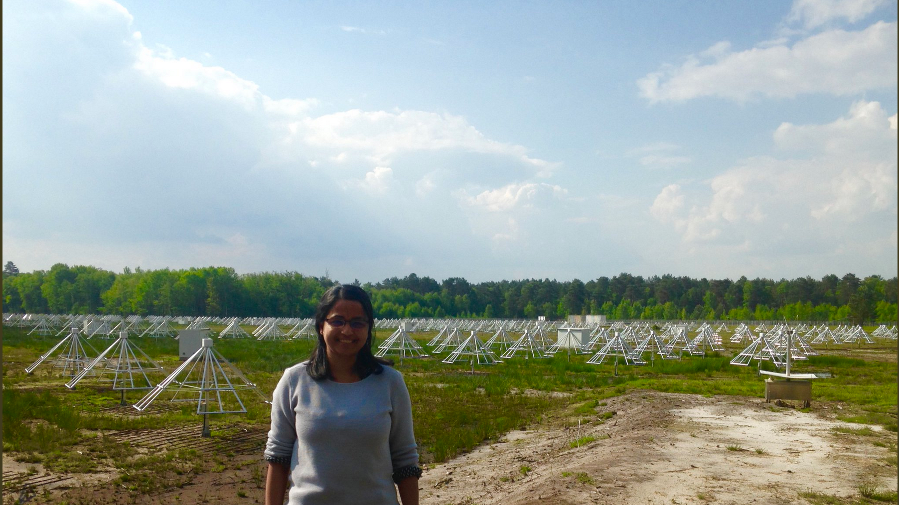

|
|

| NenuFAR- French SKA Pathfinder Current Project: I am working for the French SKA Pathfinder project- NenuFAR  1- Compact Array Image Sensitivity Calculator
The Compact array image sensitivity calculator is adapted from the LOFAR image sensitivity calculator (G. Heald et al.). Here is the link for the Compact Array Image Sensitivity Calculator: Please note that the calculator is regularly being updated to include new features. It gives values for theoretical noise from a Compact array with 3 km longest basleine, similar to LOFAR core stations or NenuFAR core + remote stations using Condon et al. 2002 The theoretically expected Image sensitivity values using baselines & core+remote stations for the correlator data and based on LOFAR image sensitivity calculator is also provided at the end of the computation. However, please note that the noise measured in the confusion limited images are typically 4-5 times higher than the theoretical noise and affected by several systematics. The users are recommended to use the theoretical values as a reference for highest achievable sensitivity in images not dominated by confusion limit. 2-Cluster of galaxies and AGNs NenuFAR Survey (CANS)- Key science program- PI- M. Pommier Non-thermal
emission from extragalactic sources (like radio galaxies and clusters
of galaxies) dominate the low frequency sky and tend to show extended
morphology up to a few arc-minutes angular size and steep (alpha ~
-1.0) or ultra steep (alpha < -1.5) spectral response that emits
prominently at lower frequencies (in the MHz-range). In the Cluster of
galaxies and AGNs NenuFAR Survey (CANS)- key science project we
proposes to carry out a survey on galaxy clusters and AGNs to highlight
the imaging capability of NenuFAR - the French SKA-Pathfinder and to
probe the extragalactic sky with twice the sensitivity of LOFAR for
short baselines over a wide range of observing frequencies. The Key
Science Program with the NenuFAR during the early science phase is
proposed over a period of 2 years (January 2020-December 2021), in
order to detect the faint diffuse structures from extragalactic sources. The proposal is accepted.
3- NenuFAR Commissioning results The first NenuFAR images at 50 MHz of A-Team sources (mostly giant radio galaxies and SNRs) and LOFAR flux calibrators (Radio galaxies and quasars) presented at EWASS 2019- SKA session is available here For detailed reports refer: 1-Pommier, M.,P. Zarka et al. NenuFAR commissioning observations on LOFAR calibrators; 2019 2-Pommier, M., et al. NenuFAR Image Sensitivity calculation; 2019 3-Pommier, M.,P. Zarka et al. NenuFAR commissioning deep observations (in narrow band mode) on A-Team source Cyg A and systematic effects, 2019 4-M.Pommier, P. Zarka et al. NenuFAR Imager mode commissioning and calibration (in narrow band) with ATeam observations, 2019 5-M.Pommier, P. Zarka et al. NenuFAR Beam former mode commissioning and calibration using Laboratory Measurement, 2018 Contact: _______________________________________________________________________________________________________________________________________ MAMTA POMMIER (mamta.pommier@univ-lyon1.fr & mamtapan@gmail.com) 28, Avenue Gaston Berger Bat. Quai 43 2eme etage 69622 VILLEURBANNE CEDEX University Claude Bernard Lyon 1, France & Centre de Recherche Astrophysique de Lyon- Observatoire de Lyon, 9 av Charles Andre, 69561 Saint Genis Laval Cedex, France Tel: 0033 4 78 86 85 22 Webpage: https://pommierm.github.io/index.html http://www.researchgate.net/profile/Mamta_Pommier  |